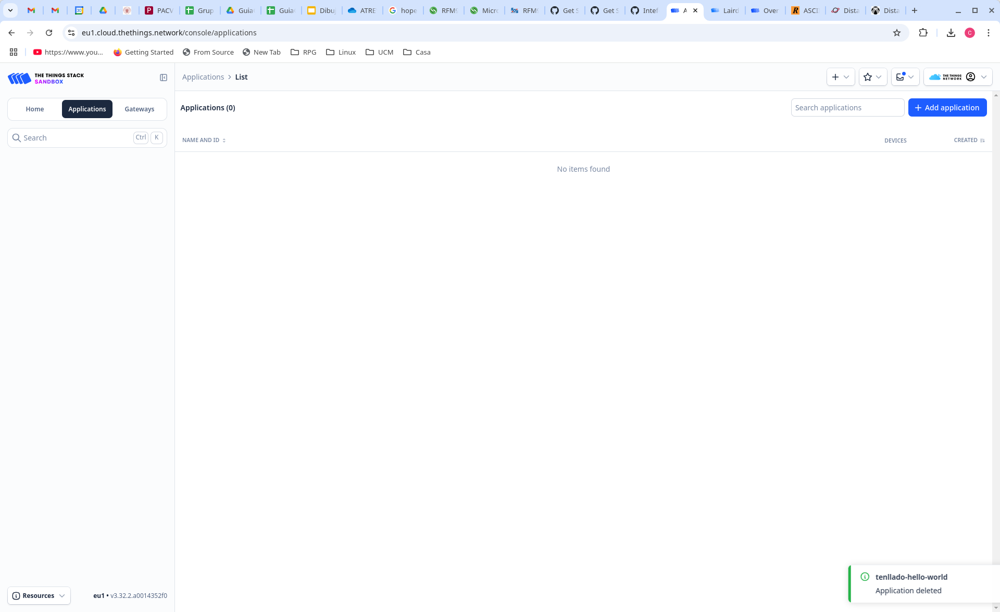
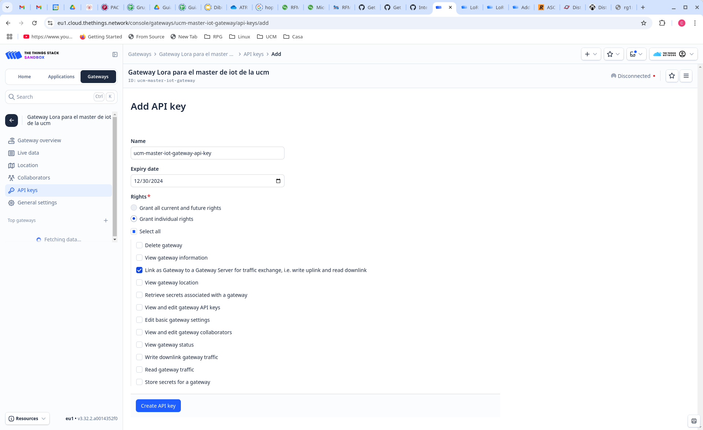

LAB10. LoRa y LoRaWAN
Introducción y objetivos
En esta práctica vamos a utilizar la tecnología LoRa para comunicar nuestros nodos ESP32 con el router/gateway LoRaWAN y los servicios del cloud de The Things Network (TTN).
El nodo ESP32 con el que hemos venido trabajando no dispone de radio LoRa incorporada, por lo que deberemos conectar un transceptor externo antes de poder utilizar esta tecnología para nuestras comunicaciones. Asimismo, para la conexión con los servidores de TTN necesitaremos un gateway LoRaWAN. Por motivos prácticos usaremos un único gateway para toda la clase, que será configurado por el profesor, aunque la memoria de la práctica detalla los pasos a seguir para su configuración y registro en TTN.
LoRaWAN y The Things Network (TTN)
En la arquitectura LoRaWAN, los nodos envían mensajes por radio. Cualquier gateway al alcance puede recibirlos y reenviarlos por Internet al servidor de red (Network Server) correspondiente, el cual elimina los mensajes duplicados y los reenvía al servidor de aplicaciones (Application Server) configurado.
The Things Network (TTN) es una red abierta en la que cualquier entidad puede crear una cuenta y registrar gateways y/o nodos. Los paquetes capturados por cualquier gateway de la red TTN se envían a su servidor de red, que a su vez los reenvía al servidor de aplicaciones, el cual ofrece un dashboard al usuario para visualizar los datos recibidos.
Las siguientes subsecciones describen los elementos que necesitamos para montar una red LoRaWAN con nodos ESP32 que envíen datos a un gateway LoRaWAN conectado a la red TTN.
Registro de gateway en TTN
Para poder desplegar nuestra red, lo primero que debemos hacer es registrar un gateway en TTN. Esto no lo puede hacer cada estudiante ya que sólo disponemos de un gateway, pero aquí se documentan los pasos a seguir.
Primero, accedemos a TTN y nos registramos si no tenemos cuenta. Una vez conectados, se muestra el dashboard:

En el panel izquierdo pulsamos en Gateways y luego en Register gateway en el lado derecho de la ventana. Nos aparecerá una nueva ventana en la que tendremos que introducir el ID único del gateway (GatewayEUI) que vendrá en la pegatina de la tapa inferior del mismo (marcado como M2 EUI):

Damos entonces a Register gateway y quedará registrado en nuestro dashboard:
Sólo nos falta crear una API key para permitir la conexión del gateway. Para ello, seleccionamos API keys en el panel izquierdo del dashboard (bajo el gateway que hemos creado) y pulsamos el botón Add API key en el lado derecho de la ventana. Rellenamos los datos y pulsamos Create API key:

En este punto, se abrirá una ventana que nos permitirá copiar la API key generada, necesaria después para configurar nuestro gateway.
Gateway Laird Sentrius RG186
El proceso de configuración del gateway tampoco puede hacerlo el estudiante, ya que sólo disponemos de un gateway LoRaWAN comercial, concretamente el modelo Sentrius RG186 de Laird. De todas maneras, a continuación se describe el procedimiento que deberíamos seguir para configurar dicho gateway y conectarlo con TTN.
Comenzaremos conectándonos al panel web de configuración del gateway usando su interfaz Wi-Fi. Para ello, pulsaremos el botón de usuario durante unos 10 segundos y luego lo soltamos. Esto configurará un punto de acceso Wi-Fi con SSID y contraseña rg1xx294c1f, al cual podremos conectarnos desde nuestro PC.
Una vez conectados, abriremos un navegador web, nos conectaremos a la dirección 192.168.1.1 e introducimos el
usuario y la contraseña (sentrius y RG1xx).
Selecionamos la opción LoRa en el menú superior.
En el panel izquierdo, pulsaremos en Forwarder y, en el panel central, seleccionaremos el
modo Semtech Basics Station.
A su vez, tendremos que proporcionar la URL del servidor de red (campo LNS server), el certificado del servidor (Server Certificate File) y el Key File, siguiendo estas instrucciones y utilizando la API key generada en TTN para el gateway:
Ahora ya podemos conectar el gateway a TTN mediante su interfaz Ethernet o activar su interfaz Wi-Fi (previamente configurada en el panel web). Si todo ha ido correctamente, veremos en el dashboard de TTN que nuestro gateway se ha conectado:
Registro de aplicación en TTN
Una vez registrado el gateway, debemos registrar una aplicación en TTN a la que se vincularán nuestros nodos. Esta parte ya podéis realizarla los estudiantes con vuestra propia cuenta de TTN. Para ello, pulsamos en Applications en el panel izquierdo del dashboard y acto seguido en Add application en la parte derecha de la ventana. En este punto, rellenamos los datos de la aplicación:

Finalmente, pulsamos Create application y se mostrará el dashboard de la aplicación, el cual nos permitirá añadir nodos como se indica en la siguiente subsección.
Registro de end devices
Al principio, el dashboard de la aplicación creada aparecerá vacío:
Para añadir un nodo pulsamos en Register end device. Como vamos a crear un nodo final a partir de un ESP32, debemos seleccionar Enter end device specifics manually. Si tuvieramos un nodo comercial podríamos darlo de alta escaneando un QR o seleccionándolo en el menú desplegable.
A continuación, introducimos los datos tal como se muestra en la figura siguiente, seleccionando como JoinEUI/AppEUI el identificador que queramos:

Al pulsar en Confirm, se mostrarán nuevos campos a introducir o generar: el ID del dispositivo (DevEUI) y la clave de aplicación (AppKey). Pulsaremos Generate en ambos casos y guardaremos los valores generados (posteriormente tendremos que configurarlos en el firmware del nodo que desarrollemos).
Finalmente, asignamos un nombre/ID a nuestro dispositivo y pulsamos Register end device para completar el proceso:

Transceptor HopeRFM95W
El dispositvo HopeRFM95W es un pequeño transceptor LoRa que puede conectarse por SPI a cualquier microcontrolador para dotarlo de conectividad LoRa. Han salido al mercado varios modelos de breakout boards que permiten adaptar este transceptor a una breadboard y así poder usar cables estándar para conectar el transceptor a nuestro nodo ESP32.
La siguiente imagen muestra el esquema de una de estas placas de breakout, fabricada por Adafruit:

Para conectar el transceptor a la placa de desarrollo ESP32-C3 DevKit Rust, debemos colocar ambos sobre una breadboard. Debido a la anchura del transceptor, no tendremos acceso a los pines por los dos lados, por lo que será necesario utilizar cables de puente (jumper wires) para sacar las conexiones de uno de los lados, dejando el otro accesible para conexiones directas. Lo más sencillo es sacar el pin G1 (cable bajo el transceptor), ya que es el único que necesitamos de ese lado.
El pinout de la ESP32-C3 DevKit Rust es el siguiente:
Una posible conexión entre el transceptor y la ESP32-C3 DevKit Rust sería la siguiente:
| Adafruit 3070 | ESP32-C3 DevKit Rust | Función |
|---|---|---|
| RST | 5 | Reset |
| CS | 6 | SPI SS |
| MOSI | 2 | SPI MOSI |
| MISO | 3 | SPI MISO |
| SCK | 4 | SPI CLK |
| G0 | 0 | DIO0 |
| GND | GND | GND |
| Vin | 3.3 V | 3.3 V |
| G1 | 1 | DIO1 |
La siguiente figura muestra las dos placas conectadas con las conexiones indicadas en la tabla anterior:

Ejercicio 1
Conecta el transceptor LoRa al ESP32-C3 DevKit Rust sobre vuestra breadboard siguiendo el pinout indicado anteriormente. Incluye en la memoria una o varias fotos como las del ejemplo.
Código del nodo: librería ttn-esp32
La librería ttn-esp32 es un componente para ESP-IDF que proporciona comunicación LoRaWAN con TTN. Soporta dispositivos conectados a transceptores Semtech SX127x. Esta librería soporta las siguientes características:
- OTAA (activación/configuración remota, Over-The-Air Activation).
- Mensajes uplink y downlink.
- Almacenamiento de EUIs y claves en memoria no volátil.
- Modo de bajo consumo y apagado sin necesidad de volver a unirse a la red.
- Comandos AT para el provisionamiento de EUIs y claves (para que el mismo código pueda flashearse en varios dispositivos).
- Soporte para las regiones de Europa, América del Norte y del Sur, Australia, Corea, Asia e India.
- API en C y C++.
Para crear un proyecto que use esta librería, lo primero que haremos es clonar el repositorio de GitHub en nuestro equipo o descargar el .zip de la rama master:
git clone https://github.com/manuelbl/ttn-esp32.git
o
wget https://github.com/manuelbl/ttn-esp32/archive/master.zip
unzip master.zip
Después, copiaremos el ejemplo examples/hello_world_in_c que viene con la librería en
un nuevo directorio. Dentro de la copia creamos un directorio components y
dentro copiamos toda la librería ttn-esp32. La estructura final del proyecto será:
hello_world_in_c/
+- CMakeLists.txt
+- components/
| +- ttn-esp32
| +- ...
+- main/
| - CMakeLists.txt
| - main.c
Si echamos un vistazo al fichero main.c, veremos que el programa se conectará a
TTN y después empezará a enviar mensajes Hello, world uplink (hacia
el servidor de aplicaciones) cada segundo.
El programa debe configurar los valores de una serie de constantes y macros, que determinan, por un lado, los IDs del nodo para TTN y, por otro, los pines utilizados para la conexión del ESP32 con el transceptor LoRa.
Para los IDs del nodo en TTN, usaremos los datos obtenidos al registar el nodo en TTN:
// AppEUI (sometimes called JoinEUI)
const char *appEui = "0101010101010101";
// DevEUI
const char *devEui = "70B3D57ED006B7B2";
// AppKey
const char *appKey = "8427407CC943D5B188160CC89F176846";
Para la conexión entre el ESP32 y el transceptor (indicada arriba en la tabla), la configuración de pines sería la siguiente:
#define TTN_SPI_HOST SPI2_HOST
#define TTN_SPI_DMA_CHAN SPI_DMA_DISABLED
#define TTN_PIN_SPI_SCLK 4
#define TTN_PIN_SPI_MOSI 2
#define TTN_PIN_SPI_MISO 3
#define TTN_PIN_NSS 6
#define TTN_PIN_RXTX TTN_NOT_CONNECTED
#define TTN_PIN_RST 5
#define TTN_PIN_DIO0 0
#define TTN_PIN_DIO1 1
Una vez configurado el fichero fuente main.c, ejecutaremos menuconfig para configurar la librería ttn-esp32. Al final del menú, encontraremos la entrada The Things Network, que configuraremos tal como se muestra en la siguiente captura:

En este punto, podemos compilar el proyecto y flashearlo en la placa. Monitorizamos el dispositivo y, si todo ha ido correctamente, veremos en el dashboard de nuestra aplicación TTN cómo se reciben los mensajes.
La aplicación envía el mensaje Hello, world, pero el dashboard muestra el payload del mensaje en hexadecimal.
Podemos usar la herramienta web RapidTables
para convertir rápidamente el payload hexadecimal a ASCII y comprobar que el mensaje recibido es correcto.
Ejercicio 2
Crea y configura un proyecto con ttn-esp32 siguiendo los pasos anteriores. Ejecútalo para que tu ESP32 conectado al transceptor y al gateway pueda enviar datos a la aplicación que hayas registrado con tu cuenta en TTN. Incluye en la memoria las capturas de pantalla necesarias.
Ejercicio 3
Modifica el código para que se envíen mensajes con el payload {0xAA, 0xBB, 0xCC, 0xDD} y comprueba en el dashboard que se reciben correctamente. Incluye en la memoria las capturas de pantalla necesarias.